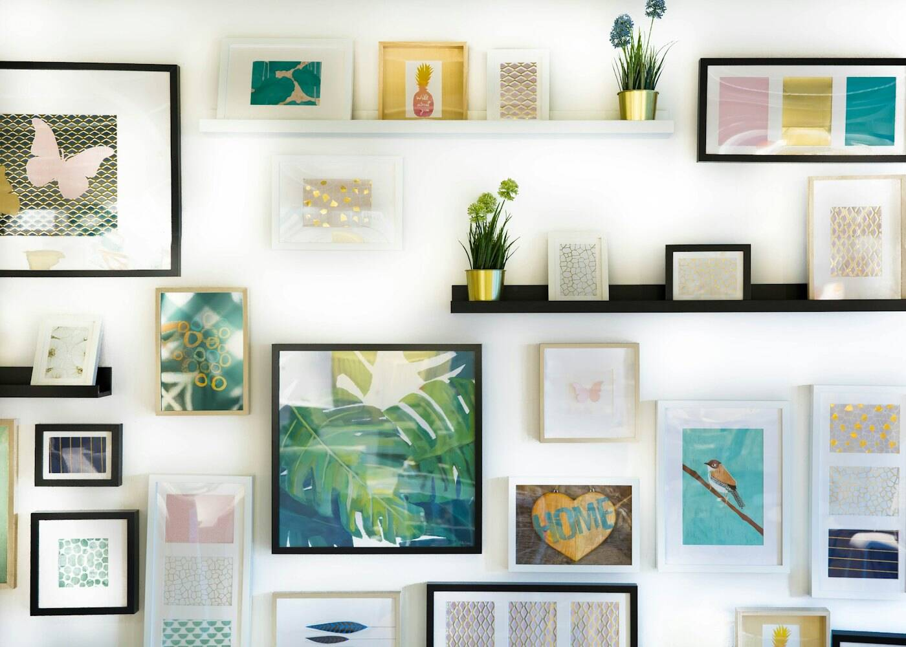
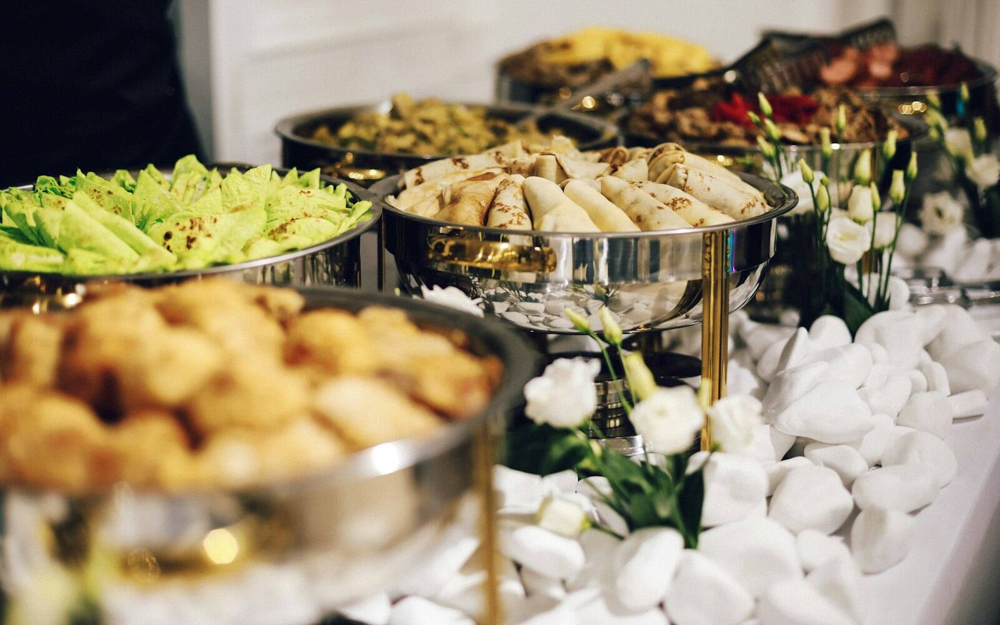
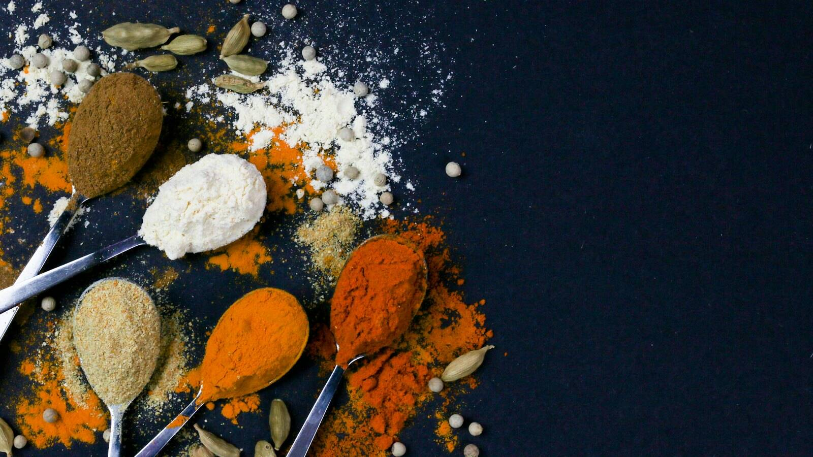

Knitting
Approx. 120 × 150 cm · soft wool blend
NZ$189
Knitting & stitchingOriginal paintingsParty food to order
I'm Ritu. I knit, stitch and paint — and I cook Indian, Indo-Chinese, Italian and continental food for your gatherings. Every piece is made slowly in small batches, and every meal is cooked fresh to order in Auckland.
Some days the table is covered in yarn and paint. Other days it's spices and steaming pans. Step into whichever you came for.

The studio
Cosy knits, hand-stitched cushions and runners, and bold acrylic canvases for your walls.
Visit the studio
The kitchen
Party trays and full menus, cooked fresh, packed in disposable containers and ready for you to collect.
See the menuA few favourites. Many pieces can be made in your colours or size — just ask.
Acrylic on canvas, painted in Ritu's studio. Each one is an original — tap a painting to see the details.

Birthdays, pujas, office lunches, Diwali nights and long weekends with friends. Choose a ready party menu or build your own from four cuisines.


Pick dishes or a party menu and your pickup date — at least 2 days ahead.
Send your order. Ritu replies to confirm the date and final total.
Pay in advance to lock in your order. Cooking starts once payment is in.
Collect it fresh, packed in sturdy disposable containers — ready to serve.
I've always made things for the people I love. This is simply a way to make them for you too.
Knitting and embroidery taught me patience, painting taught me to be brave with colour, and cooking for big family gatherings taught me that food tastes best when it's made with care. Everything here comes from my own hands and my own kitchen.
Scarves, beanies, cardigans and baby blankets knitted in the colours and sizes you choose.
Ask about a custom knitA canvas sized for your wall, in colours that suit your room — or inspired by a place you love.
Talk about a commissionAdd a handwritten note and Ritu will wrap your piece, ready to give.
Find a giftAdd handmade pieces to your bag, or build a food order on the Kitchen page, then send it to Ritu in one tap. She replies to confirm availability, timing and the final total.
Always in advance. Once Ritu confirms your order you pay to lock it in — food is cooked and pieces are made or posted after payment is received.
At least 2 days before your pickup date. For bigger parties and festival weeks, the earlier the better.
From Ritu's home kitchen in Auckland. The exact address and pickup time are shared when your order is confirmed.
Yes — anywhere in New Zealand by courier. Postage is quoted with your order confirmation, or you can pick up for free.
Tell Ritu when you order. Many dishes can be made vegetarian, milder or without certain ingredients. Food is prepared in a home kitchen that also handles nuts, dairy and gluten.
A gift that was made by hand, or a table full of food that tastes like home. Ritu would love to make it for you.